Track-a-Cohort: Winter-run Chinook
Background
This document uses shared resources via BDO github from BOR to replicate figures requested and adjust underlying code to include dynamic data. See Track a cohort_WR_plots.docx for figures requested. Certain figures include a link to more interactive plot types using Shiny (in development) and all figures include a link to code in separate CBR developed github repo.
Juvenile Production Estimate (JPE)
Related links: SacPAS Query, GitHub Repo Code
Delta STARS Survival and Routing Probabilites
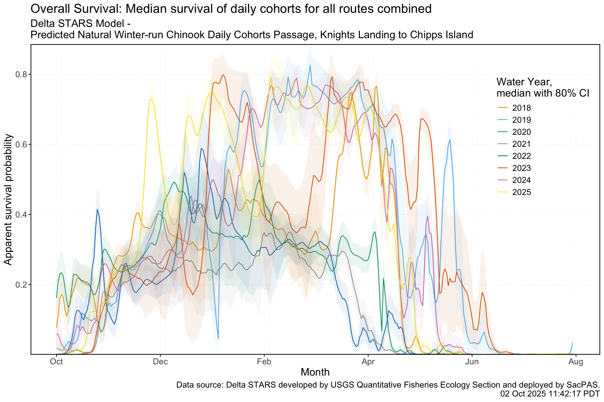
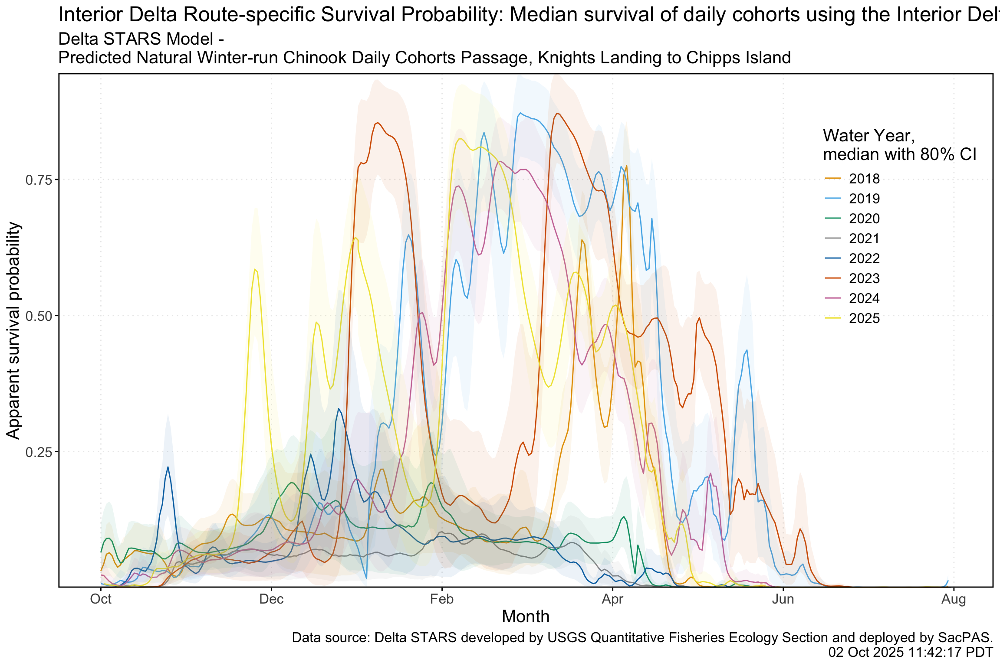
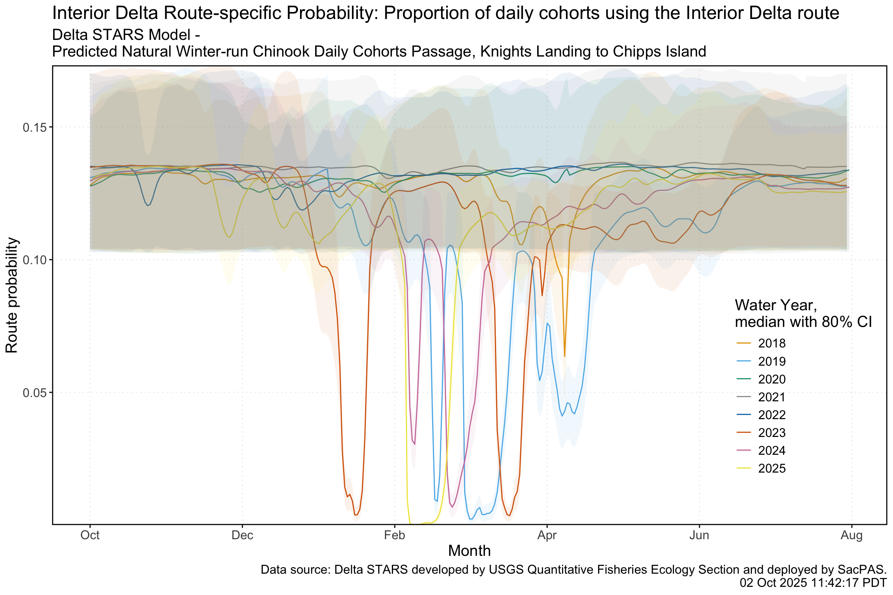
Related links: Interactive Plot - ShinyApp, GitHub Repo Code, STARS ShinyApp
Percent loss of Juvenile Production Estimate (JPE)
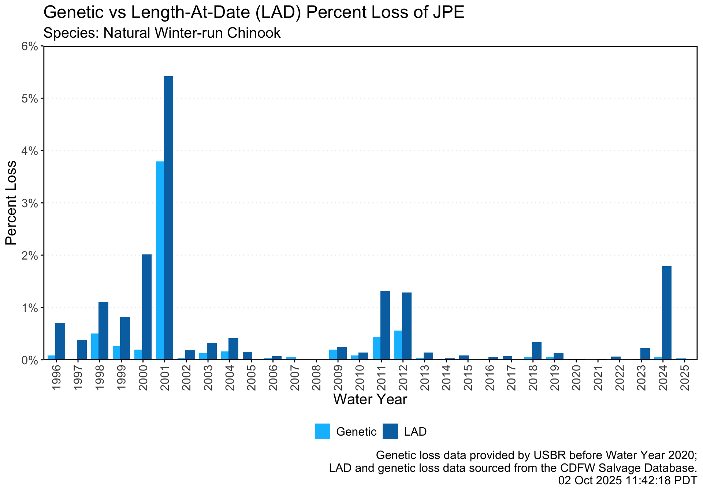
Related links: GitHub Repo Code
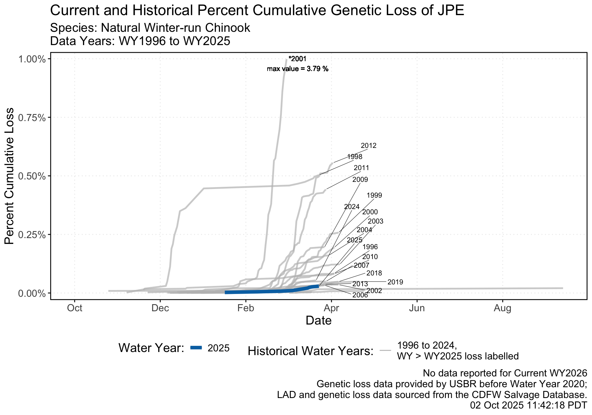
Related links: GitHub Repo Code
Total Loss
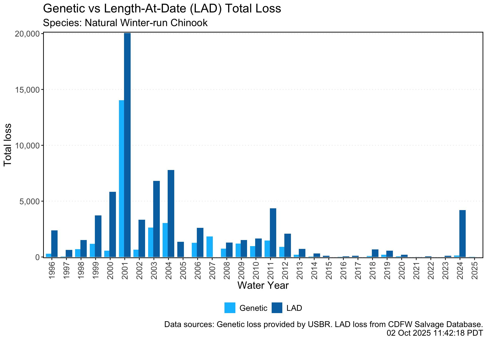
Related links: GitHub Repo Code
Cumulative Loss with Single-Year Thresholds
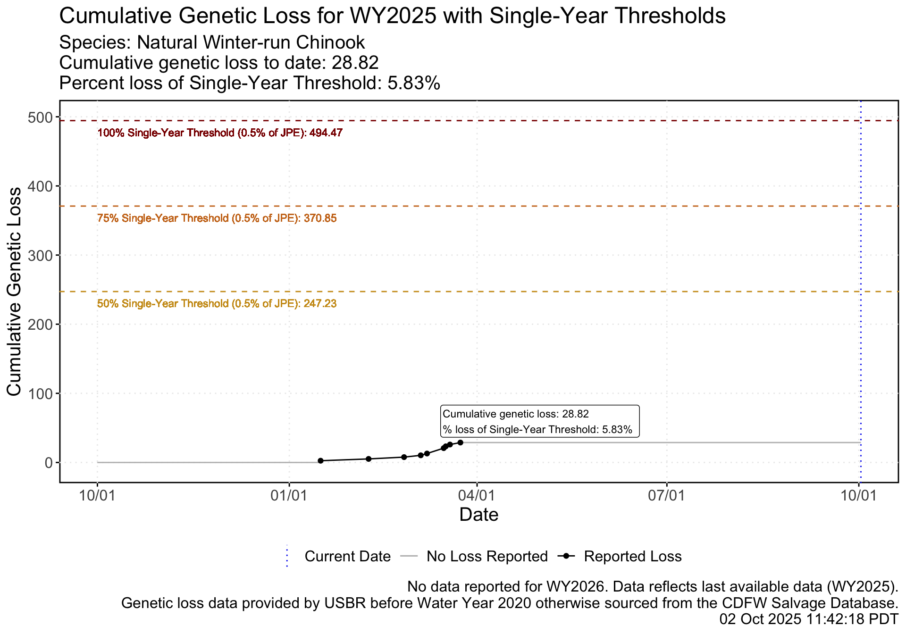
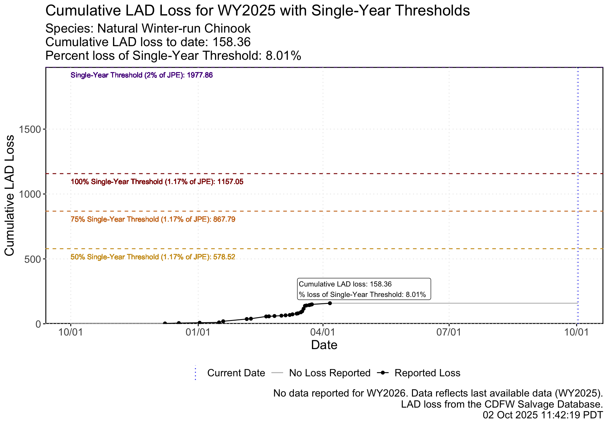
Related links: SacPAS Query, GitHub Repo Code: cumul_genetic_loss , GitHub Repo Code: cumul_lad_loss
Cumulative Loss by BiOp Status and Hydrological Classification Index (HCI)
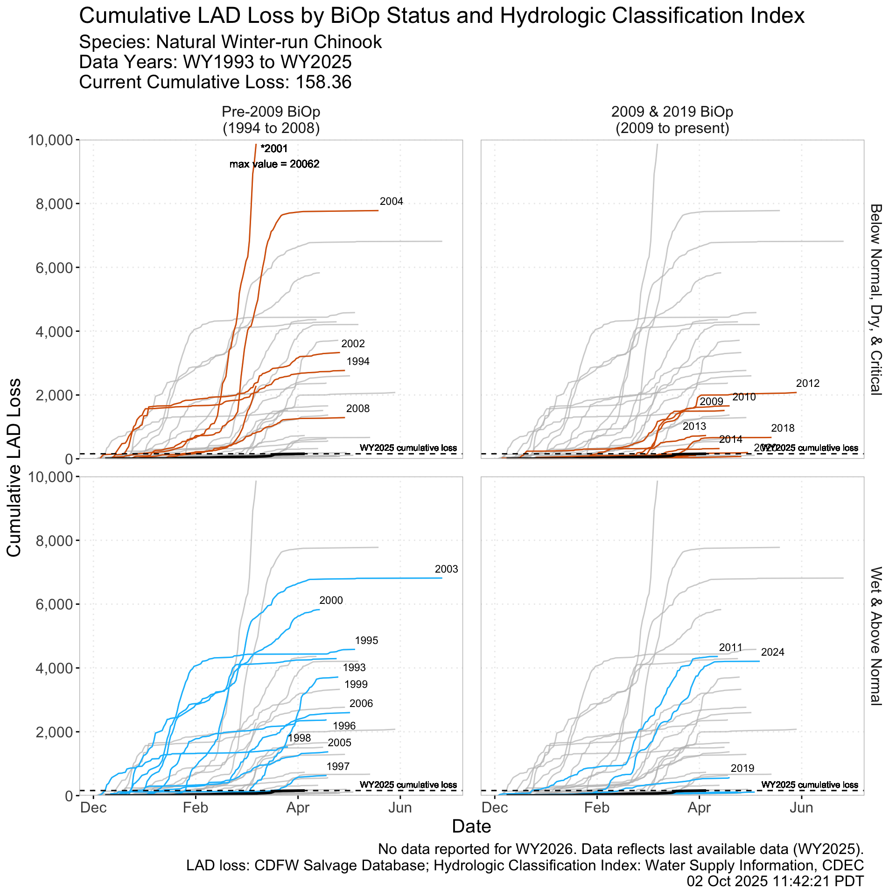
Related links: GitHub Repo Code
Daily Loss and Export by Pumping Facility
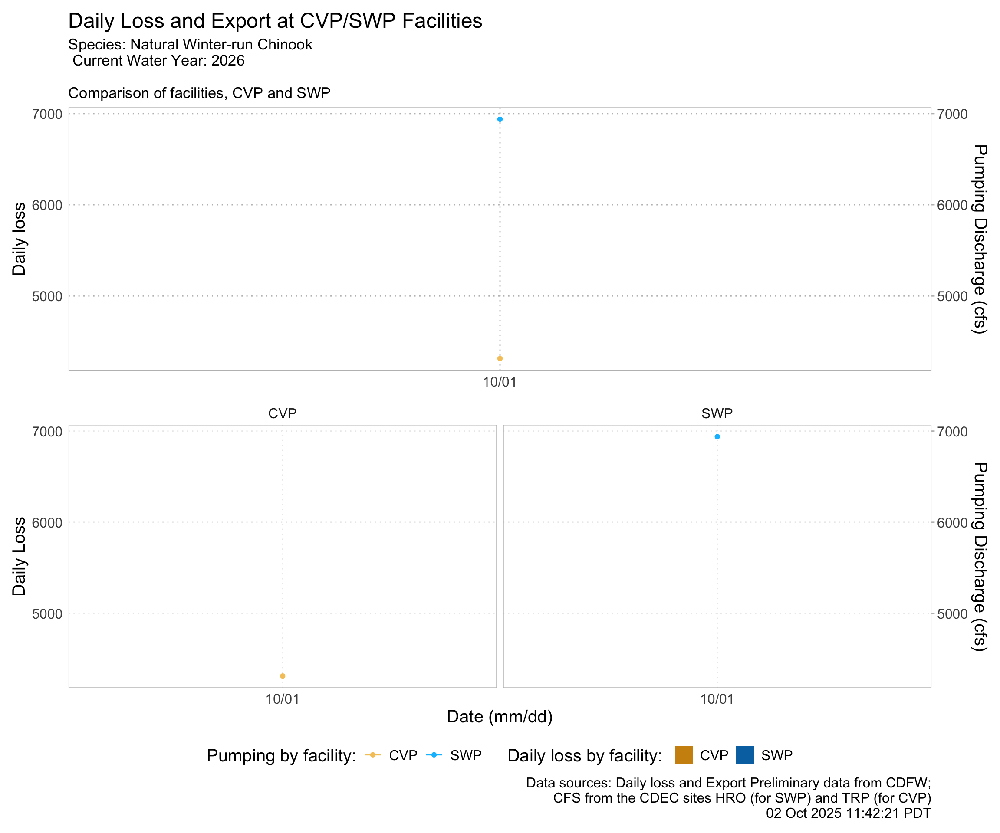
Related links: Interactive Plot - ShinyApp, GitHub Repo Code,
Predicted Weekly Loss - Tillotson Model
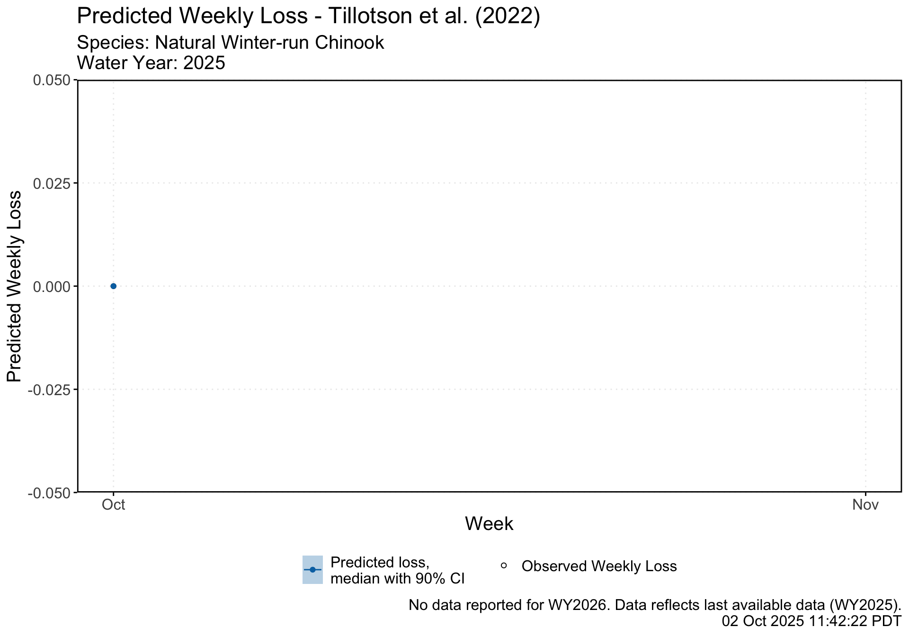
Related links: SacPAS Tillotson Tool, GitHub Repo Code: Tillotson model, data wrangling and prediction output, plot output
| Water year week | Date | Observed loss | OMR USGS tidally filtered | Export, SWP & CVP (CFS) | Avg flow at Sacramento (CFS) | Avg flow at San Joaquin (CFS) | Avg water temperature at Mallard Island (°C) | Weekly predicted loss (median, lower CI, upper CI) |
|---|---|---|---|---|---|---|---|---|
| 10 | 2024-12-03 | 2.60 | -9711.43 | 10837.86 | 18785.96 | 1314.11 | 11.18 | (0, 0, 48.2) |
| 11 | 2024-12-10 | 2.88 | -10418.57 | 10245.57 | 24981.17 | 1324.41 | 10.46 | (5.2, 0, 181.74) |
| 14 | 2024-12-31 | 2.60 | -5152.86 | 5226.86 | 51303.16 | 1342.69 | 10.92 | (17.44, 0, 102.49) |
| 16 | 2025-01-14 | 11.34 | -4475.71 | 4502.43 | 28741.81 | 1269.38 | 9.78 | (6.4, 0, 97.38) |
Related links: SacPAS Tillotson Tool, GitHub Repo Code: Tillotson model, data wrangling and prediction output, Table configuration